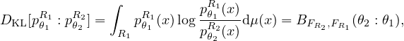

and
and 

where
This is a pseudo-divergence because when
We highlight the main result of each selected work as follows:
and where
This is a pseudo-divergence because when
Eaton, M. L. (1989).
Nielsen, F. (2022). Statistical divergences between densities of truncated exponential families with nested
supports: Duo Bregman and duo Jensen divergences.
Nielsen, F. and Okamura, K. (2023). On